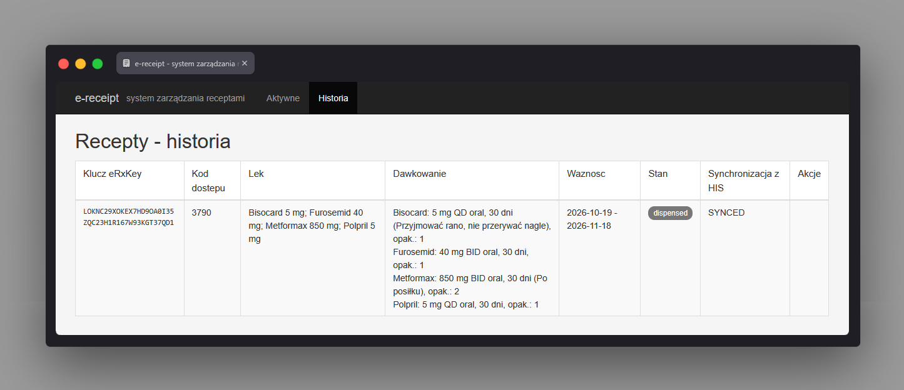

System zewnętrzny: e-receipt ReceiptUiController
Ścieżka
Ten ekran nie jest częścią frontendu Angular HIS.
Należy do osobnej, niezależnej aplikacji
apps/e-receipt (Spring Boot + Thymeleaf), która
symuluje system apteczny e-recepty i działa jako samodzielny
serwis na własnym porcie (ERECEIPT_UI_PORT, domyślnie
10431, HTTP, bez logowania).
Dostęp do niego z HIS jest tylko pośredni: lekarz wystawia
e-receptę w HIS, która jest wysyłana do e-receipt jako zasób FHIR
MedicationRequest przez kanał mTLS (port
10421, wymagany certyfikat klienta - osobny od portu
UI). Farmaceuta (symulowana rola) obsługuje ten ekran niezależnie
od HIS, w osobnej karcie/aplikacji, aby zarejestrować wydanie
leku. Zmiana stanu recepty jest następnie odsyłana do HIS tym
samym kanałem FHIR/mTLS.
Przeznaczenie
Lista e-recept otrzymanych od HIS wraz z akcjami do zmiany ich
stanu po stronie apteki. Kontroler
ReceiptUiController wystawia dwa widoki:
Aktywne (recepty w stanie "żywym" -
issued, partially_dispensed) oraz
Historia (recepty zamknięte - dispensed,
cancelled, expired), przełączane
zakładkami w nagłówku.
Dla każdej recepty widoczny jest: klucz eRxKey, kod
dostępu (accessCode), nazwa leku, dawkowania, okres
ważności (validFrom - validUntil),
aktualny stan (ReceiptStatus) oraz stan
synchronizacji z HIS (SyncState) wraz z ewentualnym
komunikatem błędu synchronizacji.
Dane wejściowe
-
Parametr
vieww adresie (active/history) - wybór zakładki Aktywne / Historia. -
Kliknięcie przycisku docelowego stanu recepty (np.
dispensed,partially_dispensed,cancelled,expired) - tylko przyciski dla stanów dozwolonych przezReceiptStatus.canMoveTo()są renderowane dla danej recepty. -
Kliknięcie przycisku "ponów wysyłkę do HIS" - widoczne tylko,
gdy
syncState == PENDING(HIS nie potwierdził wcześniejszej zmiany).
Akcje
-
GET /ui/prescriptions- pobiera listę recept zReceiptServicei filtruje je po stanie: aktywne to recepty, dla którychstatus.isOpen()jest prawdziwe (ISSUED,PARTIALLY_DISPENSED), historia to pozostałe. -
POST /ui/prescriptions/{erxKey}/status- zmienia stan recepty na wskazany (ReceiptService.changeFromUi()); nieznany kod stanu albo przejście niedozwolone zgłaszaReceiptException, a błąd jest wyświetlany na liście. Po powodzeniu stan jest wysyłany do HIS przez FHIR/mTLS; jeśli HIS nie potwierdzi zmiany, recepta dostajesyncState = PENDINGi komunikat o możliwości ponowienia. -
POST /ui/prescriptions/{erxKey}/sync- ponawia wysyłkę ostatniego stanu do HIS (ReceiptService.resync()) i aktualizujeSyncState(DISABLED,SYNCEDalbo ponowniePENDING). -
Po każdej akcji następuje przekierowanie z powrotem do
/ui/prescriptionsz komunikatem flash (sukces lub błąd).
Zrzut ekranu
